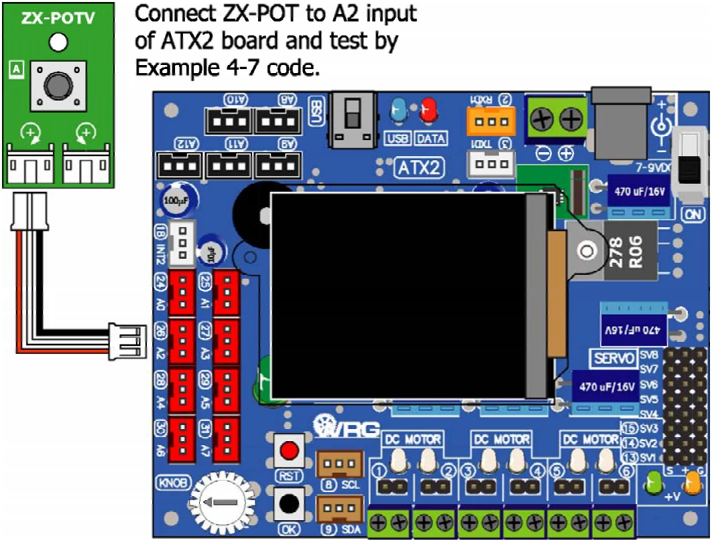

4.2.4.1 analog
This gets digital data from the analog to digital converter module of any analog port; A0 to A12 of the ATX2 controller board.
Syntax
unsigned int analog(unsigned char channel)Parameter
channel - Analog input port. It is 0 to 12 (means A0 to A12)
Return value
Digital data from analog to digital converter module. The value is 0 to 1,023 (in decimal). It represents 0 to +5Vdc.
Example 4-7
#include <ATX2.h> // Include main library
int val=0; // Declare stored variable
void setup()
{
OK(); // Wait for OK
glcdClear();
setTextSize(2); // Set text size as 2x
}
void loop()
{
glcd(1,2,"AnalogTest"); // Show message on GLCD
val = analog(2); // Read A2 input and store to val variable
setTextSize(3); // Set text size as 3x
glcd(2,2,"%d ",val); // Show A2 value
setTextSize(2); // Set text size back to 2x
}
Illustration shows how to connect the ZX-POT (simple analog sensor) to the ATX2 controller board for analog function testing.
After uploading, ATX2 will read analog value from A2 input and shows the digital data that converted by A/D converter within microcontroller. The value is 0 to 1,023 from 10-bit A/D converter resolution.
Original manual, pages 58–59